Los ángeles nos ayudan a reunirnos con el absoluto, acompañando nuestro
andar por la Tierra.
Dentro de la evolución el ser humano puede elegir el camino para efectuar
ese retorno, puede ir transitando las emociones y sentimientos y aprender
dentro de ese abanico enorme de posibilidades.
Todos los caminos tienen como objetivo ser el tránsito hacia la unidad con
Dios, con la fuente creadora de vida. Si bien sabemos que todos somos
chispas divinas, la búsqueda humana por la iluminación no es más que el
anhelo de volver a la fuente de toda luz.
Aquellos seres que aún no ven a sus ángeles, muchas veces se cuestionan
acerca de la esencia del ángel, y se preguntan “¿Qué es un ángel?
Un ángel es una esencia Divina en servicio planetario a la humanidad. No es
un ser humano, aunque puede aparecer a imagen y semejanza humana. Un ángel
es un ser amoroso, inmortal, es puente del cielo, es luz, es mensajero,
comunicador y custodio. Los ángeles no tienen libre albedrío, ellos
misionan desde el servicio y accionan aquello que se les pide. Ellos bajan
si son llamados, si se los invoca. Los ángeles son portadores de luz que
elevan los pedidos de los humanos a la divinidad.
Esto incluye a todos los ángeles menos al ángel de la guarda que siempre
está presente durante la vida ...de un humano.
Vamos a dar en lugar de privilegio por su servicio incondicional y su amor
pleno al ángel que siempre nos acompaña. Aquel que nos abraza a cada paso
de nuestras vidas, ese ángel es el llamado Ángel de la Guarda.
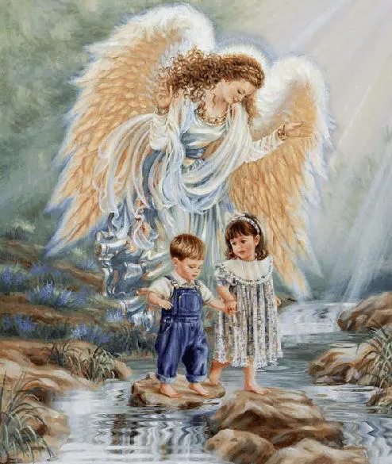
El ángel de la guarda es un ser inteligente dotado de una gran paciencia y
pureza, su servicio es ser puente entre el ser humano a quien custodia y
Dios. Nos guía ante decisiones que tengamos que tomar siempre y cuando le
demos lugar para que así suceda.
Una oración muy usada para convocarlo es la siguiente:
Ángel de la guarda, dulce compañía
No me desampares
Ni de noche ni de día.
Hablando no solamente de ángeles sino de todo lo que aún es invisible para
algunos seres humanos, es indispensable mencionar que en este tiempo ya no
hay tiempo valga la redundancia para aplicar el dicho “ver para creer”,
ahora el dicho debe ser “creer para ver”.
Los ángeles se agrupan en tres niveles llamados égidas:
Égida del Padre:
Está conformada por los Serafines, Querubines, y Tronos.
Reciben la iluminación directamente de Dios. Vibran a una frecuencia muy
elevada, de mucha pureza. Los seres de esta égida de mayor luz son:
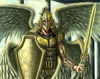
A- Serafines, los cuales tienen tres juegos de alas, uno de los cuales
utilizan para cubrir sus ojos, ya que se cegarían si miran directamente a
dios. Tienen como misión iluminar y custodiar lugares sagrados, portales
dimensionales.
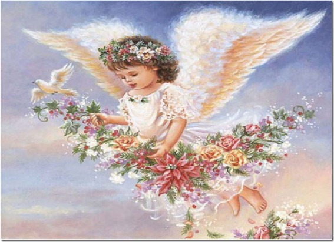
B- Querubines son ángeles encargados del orden cósmico, son guardianes del
conocimiento supremo. Son portadores de protección, sabiduría y amor, se
los representa como bebés alados.
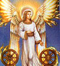
C- Tronos, son ángeles dadores de la virtud de la perseverancia. Son
sostenedores de la arquitectura divina. Custodios del Trono de Dios. Se los
representa como seres de grandes dimensiones con alas circulares abrazadas
por arco iris.
Égida del Hijo:
Está conformada por ángeles denominados Dominaciones, Virtudes y
Potestades. Reciben la iluminación de la égida del Padre y la entregan a la
égida de la Espíritu Santo, la madre. Los seres de esta égida del Hijo son:
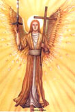
A- Dominaciones, estos ángeles custodian la salud, son protectores de la
soberanía divina. Transmiten fuerza para tratar con el ego, con el fin de
que sea iluminado y transformado. A los ángeles de las Dominaciones se los
representa con espada y cetro de poder.
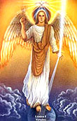
B- Virtudes, a los ángeles de las Virtudes se los representa como cabecitas
de bebé con alas. Traen liviandad y ligereza, y hacen manifestar en forma
veloz la voluntad divina. Ellos asisten en la manifestación de lo que
llamamos milagros.
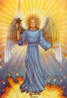
C- Potestadades, son ángeles que representan el poder de Dios, la fuerza
divina. Son guerreros que quitan los males internos y externos y además son
grandes protectores.
Égida del Espíritu Santo:
Está conformada por ángeles Principados, Arcángeles y ángeles. Estos seres
toman la energía de la égida del Hijo y la entregan a los seres humanos.
Son los oyentes directos de los pedidos humanos los cuales elevan a la
égida del Hijo. La égida de La Espíritu Santo es la más cercana a los
humanos y la más reconocida por todos. Los seres de esta égida son:
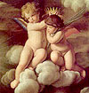
A- Principados, son ángeles que trabajan con los reinos de la naturaleza y
los elementales. Transmiten equilibrio, se los representa con una espada y
una cruz.
B- Arcángeles, son comandantes de legiones angélicas, son líderes divinos
de gran autoridad amorosa. Se los representa majestuosos y de gran belleza.
En las religiones se aceptan solo tres arcángeles que son Miguel, Rafael y
Gabriel, pero en realidad existen más, y aquí hablaremos de ellos.
C- ángeles, son custodios serviciales muy cercanos a los seres humanos, son
los más numerosos y se pueden materializar con mucha rapidez y frecuencia.
Los ángeles trabajan en grupos o legiones comandadas por los arcángeles.
Los presento aquí de acuerdo a la visión de la metafísica que nos habla de
una jerarquía de 7 arcángeles mayores. Cada una de estas legiones está
asociada a un color y a su energía vibratoria.
El contacto o comunicación con los ángeles debe hacerse siempre desde lo
más profundo del corazón. Sin rituales complicados, ni palabras difíciles
sino desde la inocencia y pureza del ser que mora en nuestro cuerpo humano.
Desde la sencillez, como si habláramos con un amigo, o con varios amigos.
Si se desea se puede armar un pequeño altarcito con flores frescas, prender
algún incienso, y encender una vela blanca para cualquiera de los ángeles,
esto permite que el ambiente esté en mayor armonía para la bajada de los
ángeles pero no es indispensable.
Veamos ahora los ángeles según las legiones a las que pertenecen:
El Arcángel Miguel y su legión de ángeles
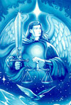
Los ángeles pertenecientes a las legiones del Arcángel Miguel, son ángeles
guerreros que portan espadas para cortar bloqueos, cortar trabas, y limpiar
profundamente en todos los planos de existencia de un ser. Son ángeles
sumamente protectores y nos ayudan a desarrollar la Voluntad, la
constancia, la paciencia y la felicidad.
Al Arcángel Miguel se lo considera el comandante de los ejércitos de Dios,
defensor de los pueblos de Dios. También es llamado Príncipe de las
Naciones. Se lo conoce también como aquel que “guarda las llaves del
Cielo”, “Jefe de los Arcángeles”, “Príncipe de la Presencia”. Al Arcángel
Miguel se lo puede visualizar vestido con una túnica azul con una espada y
un escudo que tiene la inscripción “Quién como Dios”. Puede ayudarnos a
mantenernos fuertes ante la adversidad, a resolver nuestra negatividad
personal, a encontrar fuerza cuando nos sentimos solos o extraños. Nos
ayuda a encontrar la luz de nuestro interior.
La legión de ángeles que está junto al Arcángel Miguel, trabaja fuertemente
en exorcismos y liberaciones de energía, como así también en servicio de
elevación de almas hacia los planos de luz. Se los considera benevolentes
ángeles de la muerte, porque nos traen la liberación y la inmortalidad. Son
ejecutores de la Justicia Divina. El color que vibra con esta legión de
ángeles es el azul. En este tiempo planetario la tarea de la legión de
ángeles azules de Miguel es grande y constante. El Arcángel Miguel nos
acompaña en este proceso de ascensión planetaria con todos sus ángeles de
amoroso servicio.
Entrego aquí una oración que puede servir de puente hacia el Arcángel
Miguel y sus legiones de ángeles azules.
Amado Arcángel Miguel,
Ven hacia mí con tu espada de luz azul.
Que tu y tus ángeles remuevan toda energía
Que no esté vibrando en armonía,
para que la paz se instale en mi ser.
Amado Arcángel Miguel,
que la justicia Divina se manifieste
en todas las situaciones de mi vida.
Amado Arcángel Miguel,
Envuélveme en una esfera azul brillante
para que sea mi protección,
para que mis energías no se dispersen,
y para que no ingresen energías de desarmonía.
Amado Arcángel Miguel y ángeles de luz azul
GRACIAS, GRACIAS, GRACIAS.
El Arcángel Jofiel y sus legiones de ángeles
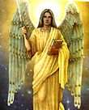
El arcángel Jofiel es uno de los siete arcángeles que están en presencia de
Dios desde la creación. Este arcángel trabaja sobre la mente dándonos
claridad y precisión en nuestras deducciones y acciones posteriores. Es
portador de inteligencia, comprensión, lógica, del don de lenguas, de todos
los conocimientos. Sus ángeles nos transmiten la capacidad de la claridad
mental, estabilidad e iluminación. También son dadores de fidelidad,
responsabilidad, disciplina, prudencia, seriedad y honradez. Estos ángeles
acuden cuando es preciso exteriorizar ideas que vienen desde el ser
interno, o canalizaciones divinas. Nos asisten en exámenes, pruebas o
situaciones en donde la sabiduría tenga que estar presente. Cuando tenemos
dudas en nuestras vidas es preciso recurrir al Arcángel Jofiel y sus
ángeles que nos proveerán de claridad.
El nombre Jofiel significa “Hermosura del Señor”, se dice que el arcángel
Jofiel es Custodio del árbol del bien y del mal, guardián de la sabiduría y
de la verdad. Se lo representa como un gran ser vestido con túnica amarilla
oro, con un libro en una mano y en la otra una espada, o sino en una mano
un pergamino y en la otra mano una antorcha.
Les entrego una oración que puede servir como puente al arcángel Jofiel y
sus ángeles amarillos.
Amado Arcángel Jofiel,
Ven hacia mí con tu energía de claridad.
Que tu y tus ángeles me envuelvan de llamas amarillas,
para iluminar mi mente y que la sabiduría
se manifieste en todas mis acciones.
Amado Arcángel Jofiel,
que la claridad y la honestidad estén presentes
en todas las situaciones de mi vida.
Amado Arcángel Jofiel,
Envuélveme en vestiduras amarillas brillantes
para que me iluminen,
y me permitan que el conocimiento divino sea en mi.
Amado Arcángel Jofiel y ángeles del rayo amarillo.
GRACIAS, GRACIAS, GRACIAS.
El Arcángel Chamuel y su legión de ángeles.
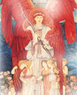
El Arcángel Chamuel es otro de los siete arcángeles que están desde la
creación divina. La energía que porta este arcángel es de amor
incondicional, de pureza, de cariño, de sostén. Chamuel nos transmite la
tolerancia, fortaleza, nos recuerda la unión con la divinidad. Nos entrega
dulzura, ternura, contención, y compasión. Representa la belleza lograda
por el poder del amor. Él y sus ángeles siempre están presentes durante el
embarazo y también en los nacimientos envolviendo de amor y armonía tanto a
la mamá como al bebé. Chamuel significa “el que busca a Dios”, también
“auxilio, fuerzas de Dios”. Este arcángel ayuda en las interrelaciones
humanas y con los otros reinos. También las energías de la legión rosada
ayuda en la protección de bienes materiales. Atrae riquezas espirituales y
propicia el amor. Se lo representa como un gran ser con túnica rosada, y
lleva en sus manos flores de azucenas.
Les entrego aquí una oración que puede servir como puente hacia el Arcángel
Chamuel y sus legiones de ángeles.
Amado Arcángel Chamuel,
Ven hacia mí con tu energía de amor absoluto.
Que tu y tus ángeles me envuelvan de llamas rosadas,
para que fluyan la dulzura y el cariño por todo mi ser.
Que el amor y la lealtad se manifiesten a través de mi.
Amado Arcángel Chamuel
Dame la capacidad de ser tolerante y comprensivo
Amado Arcángel Chamuel
Envuélveme en vestiduras rosadas brillantes
para que el amor incondicional
sea una realidad en mi.
Amado Arcángel Chamuel y ángeles del rayo rosa.
GRACIAS, GRACIAS, GRACIAS.
El Arcángel Gabriel y su legión de Ángeles
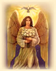
El arcángel Gabriel es el encargado de las comunicaciones entre la
divinidad y los humanos. Nos ayuda en la expresión, en el diálogo y en la
manifestación de la verdad. Tradicionalmente se conoce al Arcángel Gabriel
como el ángel de la anunciación, quién le comunicó a la Virgen madre María
que daría a Luz al maestro Jesús. Su nombre significa “Dios es mi
fortaleza”. Se lo conoce como ángel de Revelación, el portador de buenas
nuevas, el juicio y la misericordia. Es el ángel del gozo y del espíritu de
la Verdad. Se lo representa como un gran ser con vestiduras blancas,
portando un cetro dorado y en algunas imágenes lleva flores en su mano. El
acompaña cada nacimiento y lo anuncia a sus padres antes inclusive de la
concepción. Dios le ha asignado el trabajo con los niños internos de cada
ser, desde la ternura, el amor y la paz que transmite. Los ángeles de su
legión son sumamente amorosos y dedicados a la infancia. Nos ayudan a
desarrollar nuestros dones interiores y a expresarnos plenamente. Iluminan
el camino hacia la verdad interior de nuestros corazones y nos ayudan a ver
cual es el sendero más correcto a seguir para nuestro mayor bien, mayor
gozo y mayor elevación. Son ángeles transmisores de la energía de la paz,
ayudan a desacelerar ambientes y personas para que vibren en armonía. Son
ángeles mediadores que buscan el equilibrio de cada ser con la totalidad.
Entrego aquí una oración que puede servir como puente hacia el Arcángel
Gabriel y sus legiones de ángeles blancos.
Amado Arcángel Gabriel,
Ven hacia mí con tu energía de inmensa paz.
Que tu y tus ángeles me envuelvan de llamas blancas,
para que fluyan las palabras desde el centro de mi ser.
Que la verdad se manifieste a través del verbo.
Amado Arcángel Gabriel,
Guíame para seguir el camino de reencuentro
con mi niño interno para vibrar en
plenitud, armonía y felicidad.
Amado Arcángel Gabriel,
Envuélveme en vestiduras blancas brillantes
para que la paz divina
sea una realidad en mi.
Amado Arcángel Gabriel y ángeles del rayo blanco.
GRACIAS, GRACIAS, GRACIAS.
El Arcángel Rafael y su legión de Ángeles
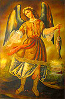
Los ángeles de la legión del Arcángel Rafael son sanadores por excelencia,
ya que el Arcángel Rafael es el protector de los enfermos, su auxilio
estará siempre presente ante situaciones de dolor, enfermedad o
sufrimiento. Se conoce al Arcángel Rafael como “Supervisor de los vientos
del anochecer”, “Guardián del Árbol de la vida del Jardín del Edén”, “El
ángel del arrepentimiento, la oración, el amor, el gozo y la luz”. Es el
ángel de la curación, la ciencia y el conocimiento. También se lo conoce
como el ángel de la Providencia que vela por toda la humanidad. Su nombre
significa “Sanador Divino” o “Dios Cura”. Rafael es la fuente espiritual
detrás de toda cura, y como representante de la Providencia Divina trae
curación a todo ser que desea estar sano. Una de sus sanaciones fue la de
Abraham luego de que se le practicara la circuncisión, el arcángel Rafael
le entregó un libro con el conocimiento de hierbas y plantas que le
ayudarían en el proceso de sanación. Curó de la ceguera al padre de Tobías
con un ungüento de la vesícula biliar quemada de un gran pez. Por eso en
algunas de sus representaciones o imágenes, aparece Rafael con un gran pez
en su mano. Protege la verdad y la transparencia, ilumina los hogares y a
los matrimonios. Se lo considera protector de los novios por un pasaje en
que el Arcángel Rafael, protege el amor de Tobías y Sara (libro de Enoc,
Tobias, antiguo testamento).
En el libro de Enoc se menciona a Rafael como el santo ángel de los
espíritus de los humanos, y el encargado de las enfermedades y de todas las
heridas de los hijos de los hombres. Se lo representa como un ser muy
grande con túnica verde. Sus ángeles acuden velozmente ante el llamado de
un ser que necesita curación. Cuando necesitamos develar una verdad con
solo llamar a estos ángeles del rayo verde podremos estar seguros de que se
manifestará todo lo que sea verdadero.
El rayo de color verde es considerado el de la Consagración a la luz.
Entrego aquí una oración que puede servir de puente hacia el Arcángel
Rafael y sus legiones de ángeles verdes.
Amado Arcángel Rafael,
Ven hacia mí con tu energía de sanación.
Que tu y tus ángeles me envuelvan de llamas verdes,
para remover toda enfermedad o mentira alojada en mi ser
y que la paz se instale en todos mis cuerpos.
Amado Arcángel Rafael,
que la verdad y la sanación se manifiesten
en todas las situaciones de mi vida.
Amado Arcángel Rafael,
Envuélveme en vestiduras verdes brillantes
para que sean mi protección,
y me permitan vibran en transparencia.
Amado Arcángel Rafael y ángeles del rayo verde.
GRACIAS, GRACIAS, GRACIAS.
El Arcángel Uriel y su legión de ángeles.
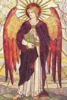
El arcángel Uriel es el que comanda todas las legiones de ángeles y
arcángeles que existen dentro del universo de Dios. Es portador de la
iluminación y la providencia divina. Su nombre significa “Luz de Dios”, por
lo tanto el nos trae el conocimiento y la comprensión de la divinidad. Se
lo suele representar en una carroza tirada por caballos blancos, y envuelta
en fuego del espíritu y en la palma de su mano porta una gran llamarada de
fuego sagrado, en otras imágenes se lo ve con un cuerno de la abundancia en
sus manos. Se lo conoce también como príncipe de la luz e interprete de las
profecías. Uriel nos ayuda a comprender la ley del Karma, causa y efecto,
así como también el arrepentimiento y el cómo enmendar lo que no creamos
tan correcto para quedar libres de carga kármica. Los ángeles de la legión
del arcángel Uriel, son portadores de la luz, de la abundancia divina, del
despertar, de la toma de conciencia. Las vestiduras del arcángel Uriel y de
sus ángeles son de color Oro Rubí podríamos compararlo con un naranja
intenso. El arcángel Uriel es el protector por excelencia, el más poderoso
de todos en el reino angélico. Además se le atribuye el ser el que concede
el encuentro con el alma gemela. Existen rituales para el pedido de la
aparición de un alma gemela. En este tiempo de gran transformación
planetaria, muchas almas gemelas se encuentran o mejor dicho se
reencuentran para la evolución. Cuando se hace un pedido de esta
profundidad y magnitud ante todo se debe tener claridad del PARA QUE se
esta pidiendo.
Les entrego aquí una oración que puede servir como puente para hacia el
Arcángel Uriel y sus ángeles naranjas.
Amado Arcángel Uriel,
Ven hacia mí con tu energía de iluminación.
Que tu y tus ángeles me envuelvan de llamas naranjas,
para poder comprender lo que me acontece en la vida,
y muéstrame el camino para la redención.
Amado Arcángel Uriel,
que el fuego sagrado y la providencia divina
se manifiesten en todas las situaciones de mi vida.
Amado Arcángel Uriel,
Envuélveme en vestiduras naranjas brillantes
para que sean mi protección,
y me permitan vibran concientemente.
Amado Arcángel Uriel y ángeles del rayo naranja.
GRACIAS, GRACIAS, GRACIAS.
El Arcángel Zadkiel y su legión de ángeles.
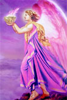
El arcángel Zadkiel es el ser que trabaja con el rayo de la gran
transformación. Es un ser de gran transmutación sobretodo a nivel mental.
Zadkiel es el arcángel de la misericordia, de la compasión y ayuda a sanar
el alma transmutando las causas. El nombre Zadkiel significa “Justicia de
Dios”, “Amor de Dios”, o “El justo de Dios”. Los ángeles violetas nos
asisten fuertemente en enfermedades psicosomáticas, en situaciones donde es
preciso perdonarse y perdonar, para liberar las almas. Estos ángeles
transmiten las energías del orden, la misericordia, el perdón, la
diplomacia, la tolerancia, la transmutación, y la libertad. Al Arcángel
Zadkiel se lo representa como un gran ser con vestiduras violetas portando
en una mano una cruz y en la otra una espada, o retirando cadenas de
alrededor de los humanos, o con una copa en la cual vibran las llamas
violetas.
Les entrego aquí una oración que puede servir de puente hacia el Arcángel
Zadkiel y sus ángeles violetas.
Amado Arcángel Zadkiel,
Ven hacia mí con tu energía de transmutación
Que tu y tus ángeles me envuelvan de llamas violetas
para poder transformar lo que acontece en mi vida,
Amado Arcángel Zadkiel
que el perdón y la compasión
se manifiesten en todas las situaciones de mi vida.
Amado Arcángel Zakiel
Envuélveme en vestiduras violetas brillantes
para que sean mi vehículo de transformaciones,
y me permitan vibran concientemente.
Amado Arcángel Zadkiel y ángeles del rayo violeta.
GRACIAS, GRACIAS, GRACIAS.